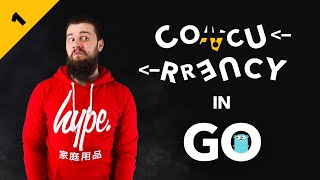

Introduction to Concurrency (Concurrency in Go #1)
MP4 · H.264 + AAC · 594 MB
Best available up to 1080p
Three ways to place the commit for the analyzed dock. Research reference: Lightroom/Apple = trailing commit (V1); Downie = auto-commit (V3).
Options in the body, commit trailing at the panel's bottom-right. The industry-standard dialog rule, transplanted to a card.

Mode → options → outcome → commit: one vertical stack at the right. The media column stretches to its height — no dead space. Footer becomes destination-only.
No commit at all: pasting starts the download with defaults, instantly. The card becomes a progress surface; "Customize" re-opens decisions for a running item (change = restart). Fast path: zero clicks.